第 1 页 · 3 课堂实践
3 课堂实践

模块1：初探人工智能


第 2 页 · 幻灯片
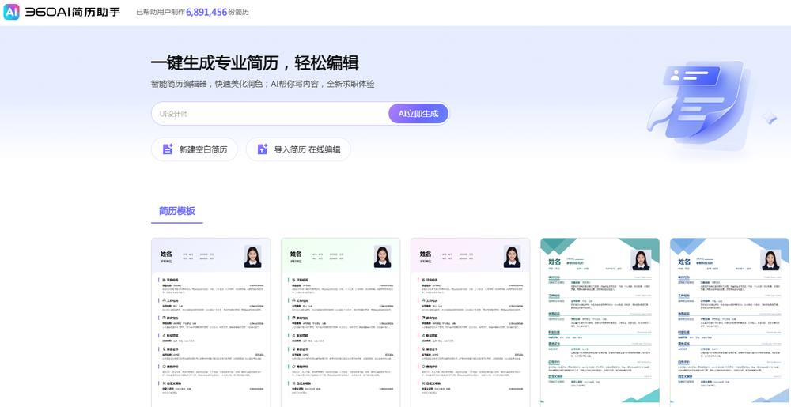
第 3 页 · 认识讯飞智文
认识讯飞智文
第 4 页 · 任务1：智作“自我介绍”演示文稿
任务1：智作“自我介绍”演示文稿
机器能够根据主题和版式要求秒生一个内容契合、条理清楚、色彩丰富的演示文稿
1.实践任务描述
第 5 页 · 任务1：智作“自我介绍”演示文稿
任务1：智作“自我介绍”演示文稿
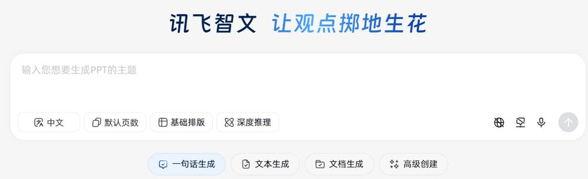
2.解决方案设计
第 6 页 · 任务1：智作“自我介绍”演示文稿
任务1：智作“自我介绍”演示文稿
任务1——拟定主题和大纲
3.实践任务实施
填写主题
第 7 页 · 任务1：智作“自我介绍”演示文稿
任务1：智作“自我介绍”演示文稿
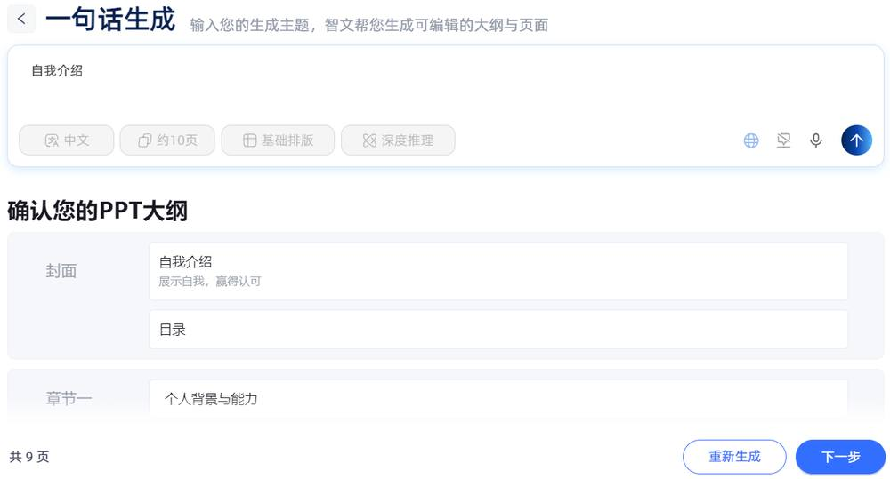
3.实践任务实施
填写大纲内容
第 8 页 · 任务1：智作“自我介绍”演示文稿
任务1：智作“自我介绍”演示文稿
3.实践任务实施
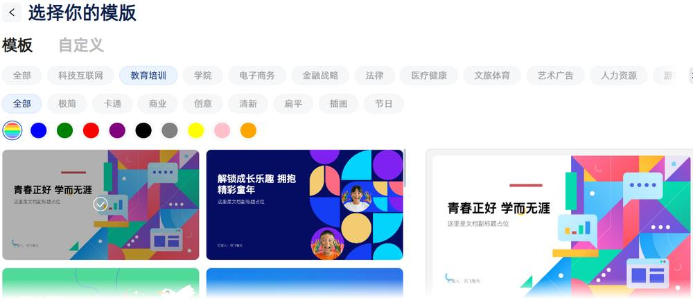
选择模版
第 9 页 · 任务1：智作“自我介绍”演示文稿
任务1：智作“自我介绍”演示文稿
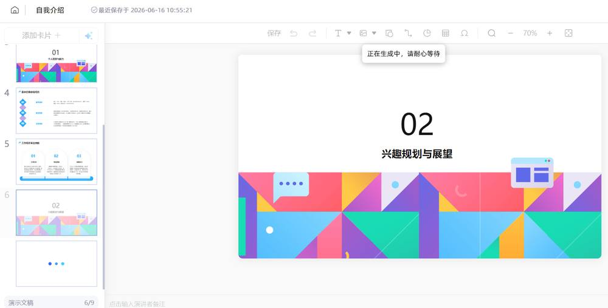
3.实践任务实施

第 10 页 · 任务1：智作“自我介绍”演示文稿
任务1：智作“自我介绍”演示文稿
3.实践任务实施

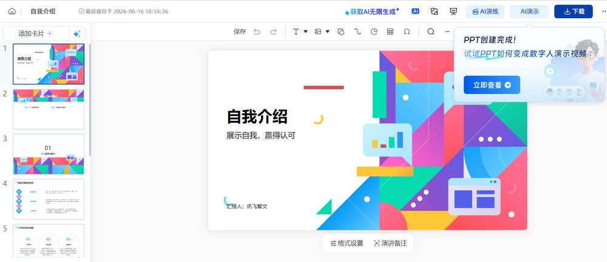
第 11 页 · 任务2：自动分析产品订单数据
任务2：自动分析产品订单数据
用DeepSeek从原始数据洞察和挖掘有价值的信息。
1.实践任务描述
第 12 页 · 任务2：自动分析产品订单数据
任务2：自动分析产品订单数据
2.解决方案设计
第 13 页 · 任务2：自动分析产品订单数据
任务2：自动分析产品订单数据
3.实践任务实施—（1）上传订单数据文件
第 14 页 · 任务2：自动分析产品订单数据
任务2：自动分析产品订单数据
3.实践任务实施—（2）多维度统计数据
第 15 页 · 任务2：自动分析产品订单数据
任务2：自动分析产品订单数据
3.实践任务实施—（2）多维度统计数据
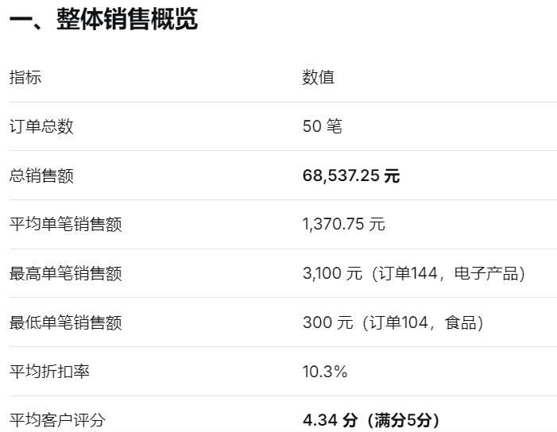
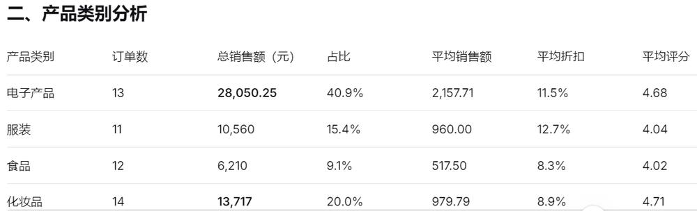

第 16 页 · 任务2：自动分析产品订单数据
任务2：自动分析产品订单数据
3.实践任务实施—（2）多维度统计数据
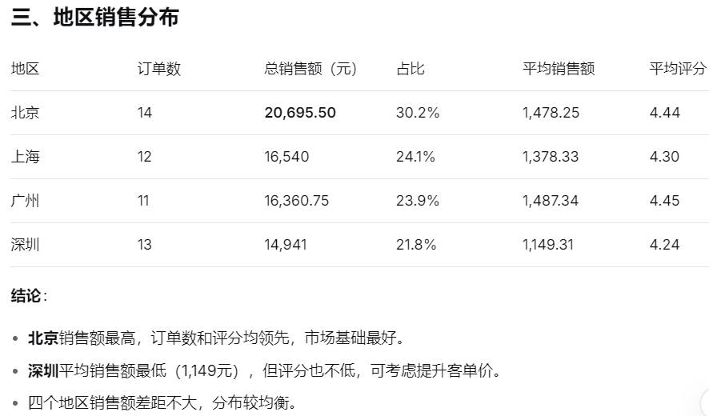

第 17 页 · 任务2：自动分析产品订单数据
任务2：自动分析产品订单数据
3.实践任务实施—（2）多维度统计数据
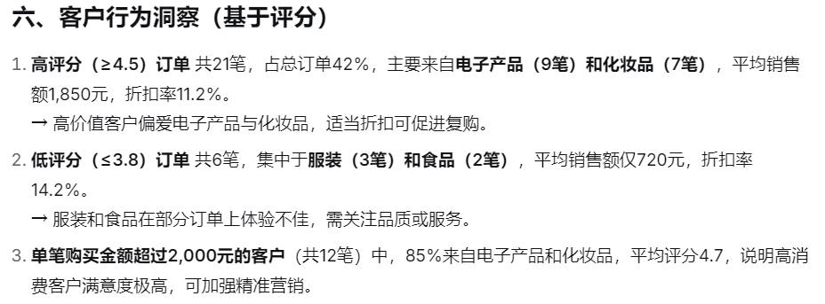
第 18 页 · 任务2：自动分析产品订单数据
任务2：自动分析产品订单数据
3.实践任务实施—（2）多维度统计数据
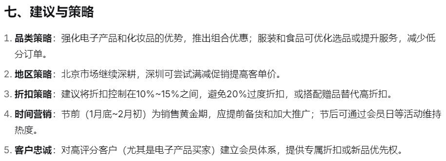
第 19 页 · 任务2：自动分析产品订单数据
任务2：自动分析产品订单数据
3.实践任务实施—（2）多维度统计数据
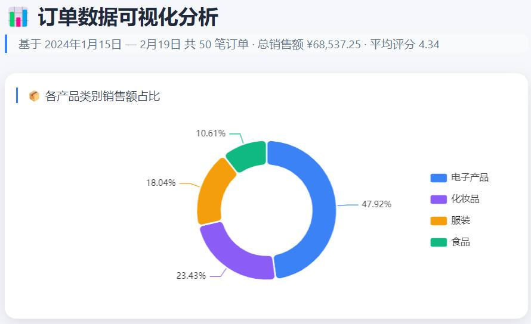
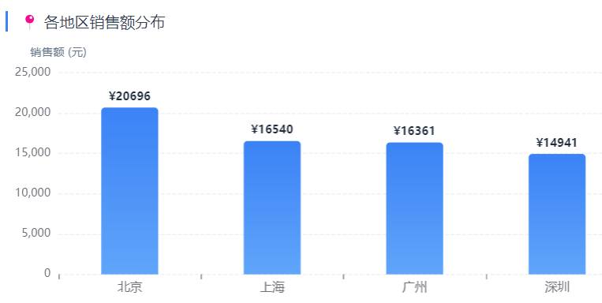
第 20 页 · 任务2：自动分析产品订单数据
任务2：自动分析产品订单数据
3.实践任务实施—（2）多维度统计数据
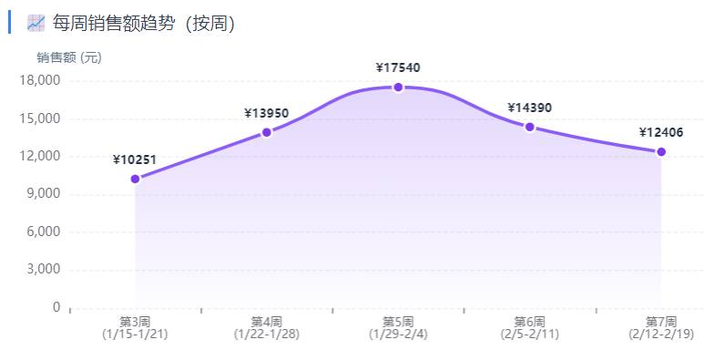
第 21 页 · 任务2：自动分析产品订单数据
任务2：自动分析产品订单数据
3.实践任务实施—（2）多维度统计数据
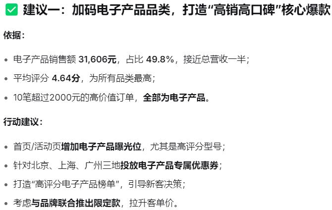
第 22 页 · 学生分享及教师点评
学生分享及教师点评

| 评价要点 | 分值 | 计分 | 教师点评 |
| 1、从哪几点入手，才能保证讯飞智文制作PPT的质量？ | 15 | 基础数据齐全、人有想法 | |
| 2、你认为，讯飞智文用到了哪些AI技术？ | 15 | 主动思考，探究背后技术 | |
| 3、DeepSeek的数据分析能力给你带来哪些想法或结论？ | 30 | 积极思考、善于总结创新 | |
| 4、你知道还有哪些AI工具具有数据分析的能力吗？ | 10 | 积极求变，另辟蹊径 | |
| 5、在使用AI工具辅助我们工作时，你的观点是（人机协同？直接交给AI？还是…）？ | 20 | 理性分析，人机协助 | |
| 6、其它（含逻辑、表情、主动、清晰、流畅、新意等） | 0-10 | 能说、会思、质疑、精技 |
第 23 页 · 子任务3：语音提示处理
子任务3：语音提示处理

人机协同
善用智能